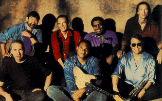

I won't sit here and tell everyone that I've know about Robert Cray from the beginning. I found out about him like the majority of fans did: Strong Persuader. After I heard Strong Persuader at my friend Wayne's house, I was hooked. After going quite a while of not buying any music, and having no blues radio stations where I lived in the country. (Rural Minnesota isn't exactly a blues hot bed). I missed Don't Be Afraid of the Dark when it came out. I found out about it and Midnight Stroll after having some extra cash and an urge to buy new music as a Sophomore in college. I saw both cassettes there and thought WOW! I've fallen behind! Little did I know then that there were 4 before the 3 I now had. A bought I Was Warned when I heard a song off of it from KUMD one of the local college radio stations. Then when Shame + a Sin came out, I saw an interview on VH1 where they asked him about this being his 8th album. I thought to my self, 8? I only have 4. Off I went. Looking high and low for Cray! I found 3 at one store. They was only one problem, they were all on CD and I didn't have a CD player yet. (Poor College student still). No matter! Charge it! Bought a CD Player and the CDs. Now I had to wait for Shame + A Sin to be released. When it came out a week or two later, I snatched it up. I had a good collection of Robert Cray at that time. I had a few problems though, Half of them where on cassette, the other half were on CD. So, I bought the cassette versions on CD. What can you do when you have to have Cray? Kind of like an addiction at this point. I was driving back from Stevens Point Wisconsin in the summer of '95, I tuned into WOJB 87.9 on a monday night. (WOJB is the radio station for the Lac Coutre Orielles (I know I'm not spelling that right) Reservation ) It happened to be blues night and they were playing tunes off of the new CD by Robert Cray. Yikes! I'd missed yet another one! So I went and bought that one. Just to be sure, I ran it through the music computer at the record store and they had a listing for Who's Been Talking. It was an early recording. Anyway, It seems my quest for a complete collection will never end.
Just another story about how the internet is improving life....
Thanks to the Internet and
The Robert Cray fan
club on Yahoo! http://clubs.yahoo.com/clubs/robertcrayfanclub (stop on
by!) I a lot about the Take Your Shoes Off CD before it was even
released. It's great to talk to other Robert Cray fans like myself. We all
agree that "He's done it again." Take Your Shoes Off is another fine Cray
album.
In 1999 I found a copy of Who's Been Talking in album format in a record store in Arlington, VA (D.C. Suburb). Now I have all the American releases. Next I have to get the U.K. releases ;-).